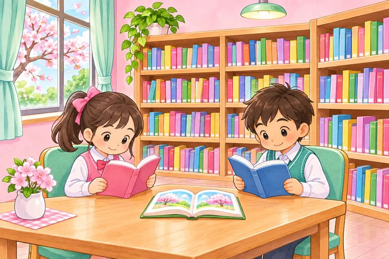
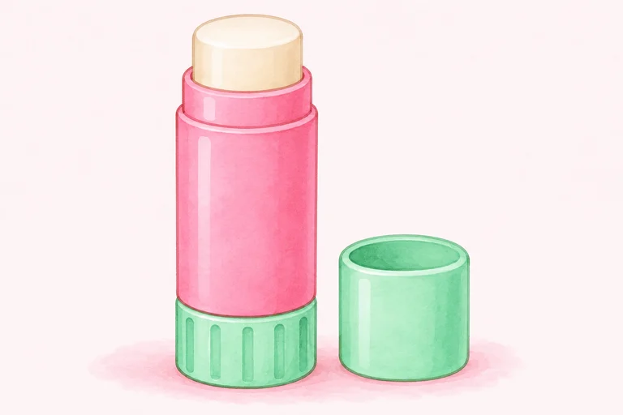
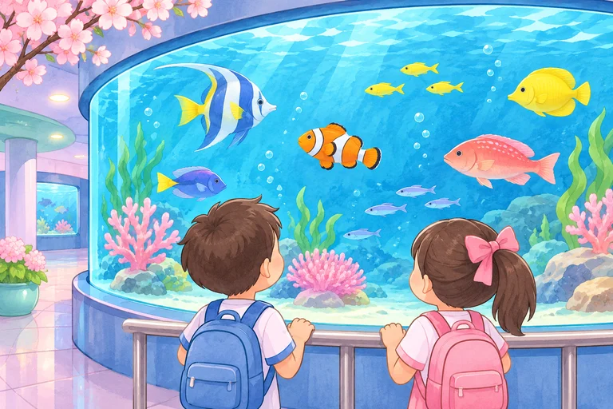
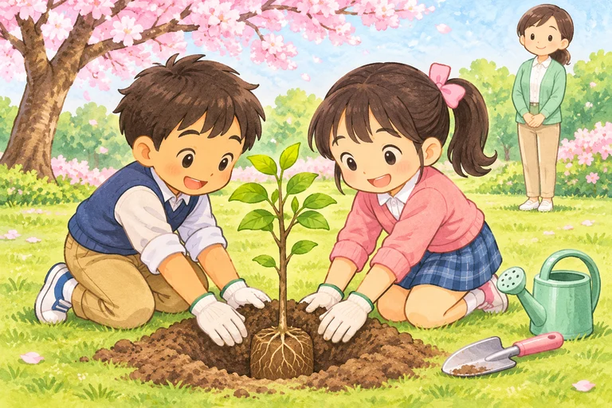

library
thư viện
LIBRARY
The library is on the second floor.
Chưa đánh dấu
Review 2 · Học trước, thử nhớ rồi luyện đề
Ôn kết hợp Units 6–10: trường lớp, sở thích, đồ dùng và những chuyến đi đã qua.
Giọng có sẵn trên thiết bị. Thiếu giọng Anh thì em vẫn xem chữ và luyện viết được.
Bấm Nghe khi em sẵn sàng. Trang không tự phát âm thanh.
Nghe cả từ/cụm, đọc theo rồi dùng ABC để nhớ cách viết. ABC đọc tên chữ cái, không phải bài luyện âm. Với cụm nhiều từ, các nhóm chữ được tách riêng.
Chưa có từ cần ôn. Em chọn một nhóm rồi bấm “Cần ôn lại” ở từ muốn luyện thêm nhé.

thư viện
The library is on the second floor.
Chưa đánh dấu
tầng thứ hai phía trên tầng trệt
The art room is on the second floor.
Chưa đánh dấu

làm dự án (V-ing)
She likes doing projects.
Chưa đánh dấu
thú vị
She thinks it is interesting.
Chưa đánh dấu

hồ dán dạng thỏi
This is An’s glue stick.
Chưa đánh dấu
bút sáp màu
Whose crayon is this?
Chưa đánh dấu
bên cạnh
The pencils are beside the book.
Chưa đánh dấu
của ai
Whose glue stick is this?
Chưa đánh dấu

thủy cung
We were at the aquarium yesterday.
Chưa đánh dấu
đã nghe nhạc
We listened to music yesterday.
Chưa đánh dấu
đã đi (quá khứ của go)
They went to Ba Na Hills last November.
Chưa đánh dấu

đã trồng cây
They planted trees on the trip.
Chưa đánh dấu
kỳ nghỉ mùa đông
This is a plan for a winter holiday.
Chưa đánh dấu
kỳ nghỉ tham quan
This is a plan for a sightseeing holiday.
Chưa đánh dấu
Nghe hội thoại rồi đọc theo. “Đến lượt em” chỉ đọc A để em nói câu trả lời của B.
A: Where is the library?
B: It is on the second floor.
Ground floor ở dưới first floor, không coi hai tầng là một.
A: What school activity does she like?
B: She likes doing projects because she thinks it is useful.
Sau does dùng like; khi kể dùng likes + V-ing.
A: Whose glue stick is this?
B: It is An’s.
Whose hỏi chủ sở hữu.
A: Where are the crayons?
B: They are under the desk.
Where are…? — They are… với số nhiều.
A: Were you at the aquarium yesterday?
B: Yes, we were. We watched the fish.
Kể nơi bằng were, kể hoạt động bằng watched.
A: Did they go to Ba Na Hills last November?
B: Yes, they did. They visited the old buildings.
Sau Did dùng go; câu kể có went/visited.
Ví dụ tự soạn. Vị trí và sở thích là giả định theo từng ví dụ. Trang không thu âm hoặc tự chấm giọng của em.
Mỗi nhóm có bốn bài nhỏ, không giới hạn thời gian. Em được sửa rồi thử lại. Câu trả lời tự lưu để quay lại làm tiếp.